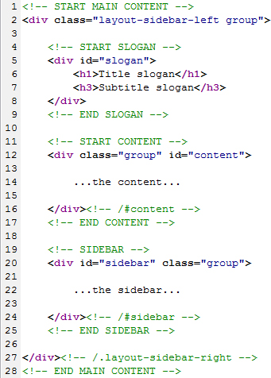
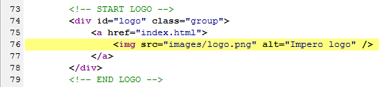
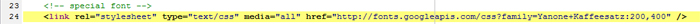
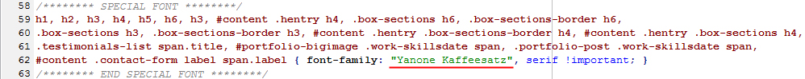

“Impero HTML” Documentation by “Your Inspiration Web” v1.0
“Impero HTML”
Created: 30/09/2011
By: Your Inspiration Web
Email: support@yourinspirationweb.com
Thank you for purchasing our theme. If you have any questions that are beyond the scope of this help file, please feel free to email via my user page contact form here. Thanks so much!
Table of Contents
- HTML Structure
- CSS Files and Structure
- JavaScript
- Change the logo
- Change the special font
- The sliders
- Contact PHP script configuration
- PSD Files
- Sources and Credits
A) HTML Structure - top
Navigation
The navigation is in located on header (#header) and have the ID "#nav". Here the structure:

Content
This theme is a fixed layout with two columns. All of the information within the main content area is nested within a div with an id of "content". The sidebar's (column #2) content is within a div with an id of "sidebar". The general template structure is the same throughout the template. Here is the general structure.
If you would like to edit the color, font, or style of any elements in one of these columns, you would do the following:
#content a {
color: #someColor;
}
If you find that your new style is not overriding, it is most likely because of a specificity problem. Scroll down in your CSS file and make sure that there isn't a similar style that has more weight.
I.E.
#content a {
color: #someColor !important;
}
So, to ensure that your new styles are applied, make sure that they carry enough "weight" and that there isn't a style lower in the CSS file that is being applied after yours.
Each page can be easily changed in its layout, replacing a class, that define the layout of the page:
- Page with sidebar on right: "sidebar-right";
- Page with sidebar on left: "sidebar-left";
- Page without sidebar: "sidebar-no";
You need to define this class in the ".inner" div, inside the main content wrapper. Here an example:
<div class="inner sidebar-right"> content and sidebar </div>
B) CSS Files and Structure - top
We're using one main CSS file in this theme, located in the root of the theme and called "style.css". It contains the general reset and all style of the theme. The other two are
The stylesheet is organizzed and compact, to easily find the roles. Each section of this file is delimited by some comments line. Here an example:
/* === HEADER === */ some code /* === END HEADER === */ /* === CONTENT === */ some code /* === END CONTENT === */ /* === SIDEBAR === */ some code /* === END SIDEBAR === */ /* === FOOTER === */ some code /* === END FOOTER === */ etc, etc.
Other CSS files are located in the "css" folder and they are for specif jQuery library.
If you would like to edit a specific section of the site, simply find the appropriate label in the CSS file, and then scroll down until you find the appropriate style that needs to be edited.
C) JavaScript - top
This theme imports three Javascript files.
- jQuery: is a Javascript library that greatly reduces the amount of code that you must write.
- Custom scripts: Most of the animation in this site is carried out from the customs scripts.
- jQuery Cycle: used for the "Cycle Slider".
- jQuery Easing: used for particular effects of the Cycle Slider
- jQuery jCarousel: for the "slider Carousel" and for the portfolio with slider.
- jQuery Nivo Slider: for the nivo slider, that you can put inside the content of a page.
- jQuery prettyPhoto: used for the lightbox of the images.
- jQuery tipsy: used for the effect on social icons.
- jQuery tweetable: used to show the last tweets of a twitter account.
- jQuery Quicksend: used for gallery and portfolio filterable, for the ordering effect.
- swfObject: used for the render some videos.
- cufon: used for the special font.
D) Change the logo - top
To change the logo image url, you must edit header of each HTML file:
E) Change the special font - top
The special font is provided by Google Fonts
Then set the specific font, by google fonts, you need to edit style.css file:
You can also set a font, choose one of the fonts saved in "Fonts" folder.
F) Sliders - top
There are four sliders available in this theme:
- Slider Cycle: in the slider-cycle.html file;
- Slider Carousel: in the slider-carousel.html file;
- Slider Nivo: in the slider-nivo.html file;
- Slider Elegant: in the slider-elegant.html file.
G) Contact PHP script configuration - top
This theme have a contact form already working, by the file called sendmail.php. The script is written with PHP language and work both in client-side, that server-side. The ajax request and real-time validation is on js/contact.js file.
In the file sendmail.php, there is some configuration, for the sending of the contact form.
With this, you can configure to send emails from, and where to send the name that will appear in the email client:
// email
define('TO_EMAIL', 'your@email.com');
define('FROM_EMAIL', 'info@test.it');
define('FROM_NAME', 'Your Name');
Then, the contact form is already dynamic and works with infinity combination of inputs on contact form.
That is, you can add also more input fields, without change the script of sendmail.php file.
Also, you can configure the body of the email and add inside the information added by the user in the contact form.
You can configure the body with this constant, that you find on top of the file:
define( 'BODY', '%message%<br /><br /><small>email inviata da %name%, email %email%.</small>' );
The string between the percentual symbol (%), is the name of the field. For example, if I add this field in the contact page:
<input type="text" name="name" id="name-form" class="required" value="" />
by the string %name% (that is the same of name="name") I can replace it with the name added by the user in the contact form.
In addition, you can configure the real time validation, by adding some classes on the input fields. For example:
<input type="text" name="email" id="email-form" class="required email-validate" value="" />
with the classes "required" and "email-validate", you can say respectively that this field is required and must be a valid email.
H) PSD Files - top
We've included the psd of the home.
If you'd like to change the main image in the header, open "home.psd", make the necessary adjustments, and then save the file with the right image name and replace the existing file. Do the same for other part of the theme.
I) Sources and Credits - top
Fonts
- Quicksand font http://www.fontsquirrel.com/fonts/Quicksand
- Bebas http://www.dafont.com/bebas.font
- Waukegan http://www.fontspace.com/luke-owens/waukegan-ldo
- Dustismo http://www.dafont.com/dustismo.font
- Folks http://www.dafont.com/folks.font
- Reklame Script http://www.dafont.com/reklame-script-demo.font
- Nilland http://www.dafont.com/nilland.font
- Merge http://www.fontsquirrel.com/fonts/Merge
- Delicious Font http://www.josbuivenga.demon.nl/delicious.html
- League Gothic http://www.fontsquirrel.com/fonts/League-Gothic
- Chunk Five http://www.fontsquirrel.com/fonts/ChunkFive
Icons
I’ve used “Basic icon set” pack, you can find it here:
http://pixel-mixer.com/basic_set/
and another icons with shadow effect:
http://www.dezinerfolio.com/freebie/30-free-vector-icons
Social network icons are taken here:
http://www.nouveller.com/general/free-social-media-bookmark-icon-pack-the-ever-growing-icon-set/
and some free stock
Once again, thank you so much for purchasing this theme. As I said at the beginning, We'd be glad to help you if you have any questions relating to this theme. No guarantees, but I'll do my best to assist. If you have a more general question relating to the themes on ThemeForest, you might consider visiting our forum.
Your Inspiration Web